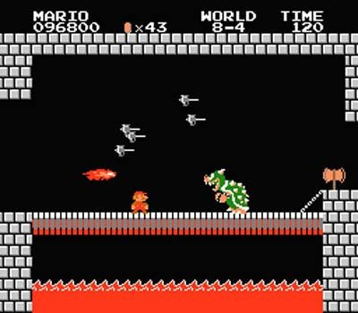

In this world developed and published by Nintendo, we follow the story of Mario Mario, the famous brother of two in which he travels through the mushroom kingdom and other realms in order to save the princess peach from the tyrant bowser.

Expansion
Super Mario Brs. is a game that has been constantly adapted through time, following the same process and code itself, save the princess. Through time the game has developed significant changes with how it's character designs and grafics have shifted through the age and how new characters call for new levels for mario to explore and jounrey to by jumping anf stomping his enemies.
Super Mario Bros. The Movie
The Popularity of the game has grossed so much by its audience and developers that it was only a matter of time that a potential movie has been made about the brother. Even though there was a movie back in the 90s, fans and general audiences agreed that it did not stick with he script and live action was a bad idea. So in the efforts of Illumination films to provide they stick to animation and had the charactors, fans, and developers satisifed by its first offical teaser: